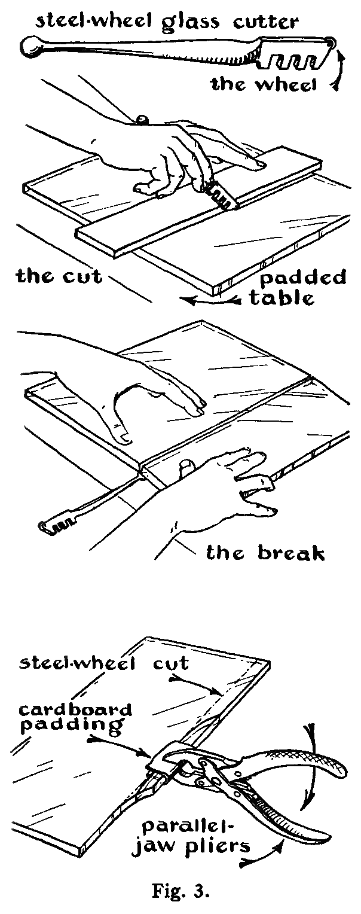
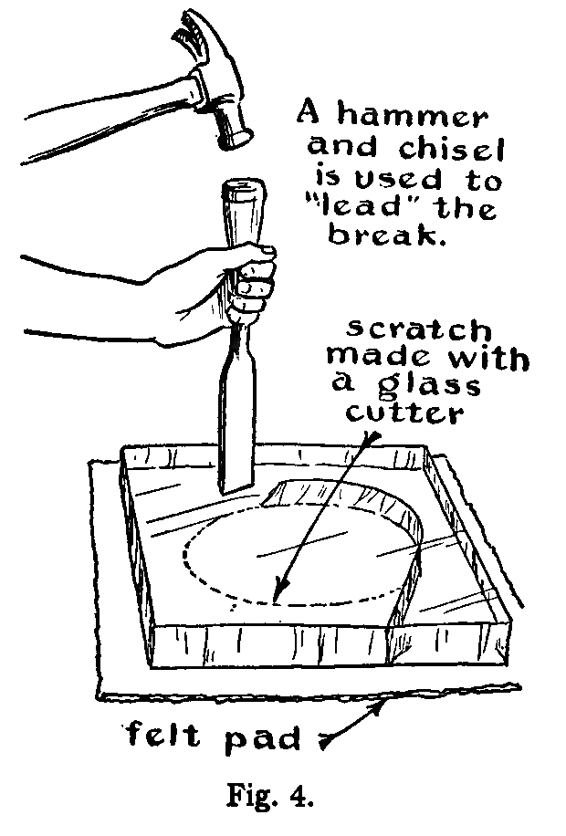
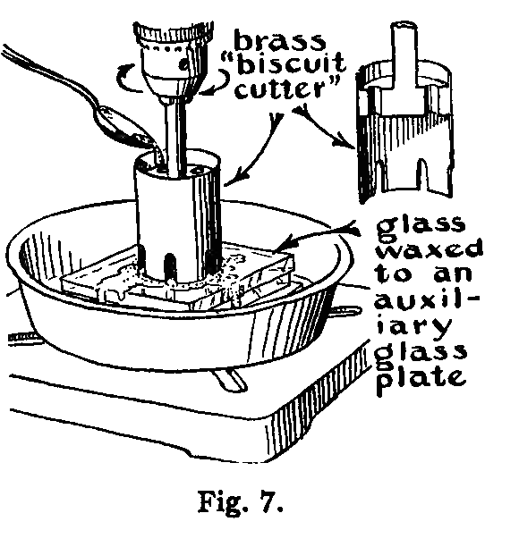
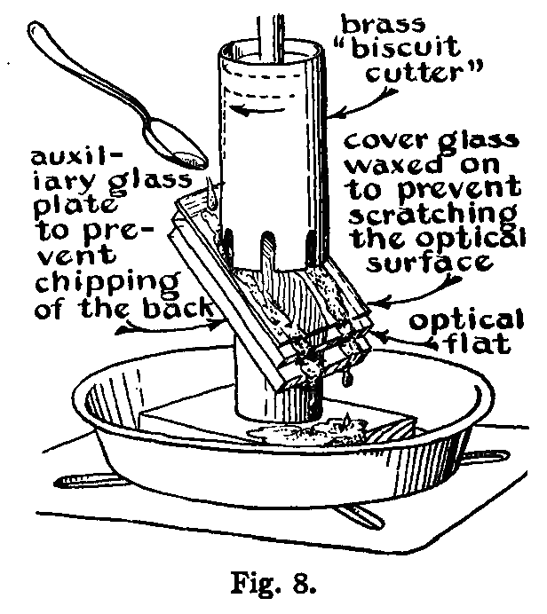
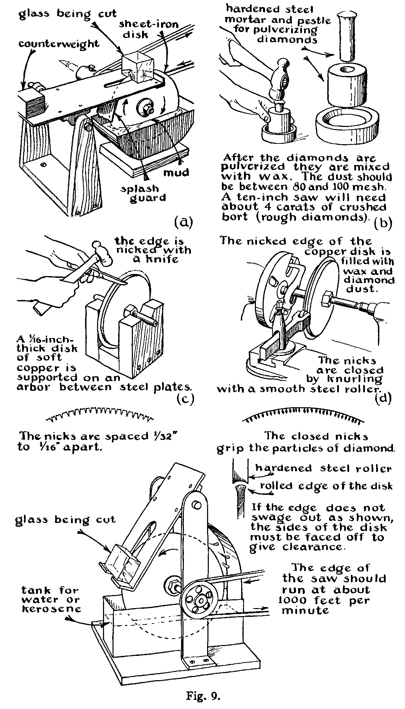

The work, whether it is a mirror, a lens, or a prism, can often be cut to rough shape from stock plate glass with an ordinary wheel cutter, the most common form of glass cutter, which is used for cutting all kinds of polished glass in all ordinary thicknesses. The cutter is drawn across the glass surface once with sufficient pressure definitely to mark the glass. It should not be run back and forth along the same line. After the glass is "marked," it is broken by bending it away from the cut, as shown, for example, in Fig. 3. The parallel-jawed pliers, also illustrated in Fig. 3, are useful for making narrow cuts. The break may also be started by lightly tapping the glass on the back side opposite the mark with the small knob provided on the handle of the wheel cutter.
The procedure for cutting thick plate glass is to lubricate the wheel cutter with turpentine or kerosene before the cut is made. After the glass is marked, the break is started with a blunt chisel. The chisel is held firmly against the back of the glass at a point directly opposite the mark and tapped sharply with a small hammer. The edge of the chisel should be parallel to the mark. It is well to have the glass supported, cutter-mark down, on a cloth or padded surface. When the break has started, it is led along the cut with the chisel (See Fig. 4.)
Very thin glass is best cut with a diamond point especially mounted and sharpened for this purpose.[5]
If a disk is desired, the glass is first cut square, and the corners are then cut to give a polygonal piece approximating the desired shape. The rough edges may be removed by holding the glass against a rotating flat disk of cast iron fed with a mixture of Carborundum and water. (See Fig. 5.) Also, the glass disk may be waxed onto a metal plate mounted in the headstock of a lathe. As it is rotated, the edges are ground with an iron tool, which is fed with Carborundum and water as shown in Fig. 6. A light springy tool is recom mended. Oilcloth should be used to protect the lathe so that abrasive does not get into its working parts or on its ways.
A common method of cutting small disks (up to about 6 inches in diameter) from slabs of glass is by means of a "biscuit cutter." This is simply a thin-walled tube of iron or brass mounted in a drill press as shown in Fig. 7. The rotating tube is fed against the glass, Carborundum and water being applied with a spoon. Fig. 7 also shows a novel method of central feeding. To prevent chipping when the biscuit cutter goes through the glass, it is well to wax an auxiliary backing plate onto it with beeswax. Grade 60 or 90 Carborundum should be used except for fine cuts or cuts on delicate and fine work, in which case grade 120 Carborundum should be used. The cutter will cut more rapidly if instead of water a mixture of turpentine and camphor is used with the Carborundum. The proportions of the mixture should be 5 grams camphor to 1⁄2 liter turpentine. 
Diagonal mirrors, such as the Newtonian diagonal for a small telescope, may be cut out of a larger figured flat mirror with the biscuit cutter. The larger mirror is mounted in the drill press at an angle of 45° and cemented with beeswax on a backing of plate glass. It is cut in the manner shown in Fig. 8. Usually the front of the flat is also coated with a cover glass, stuck on with beeswax, to prevent scratching the figured surface with the abrasive. A mirror thus cut out may develop a slight turned-up edge. However, if the cut rim, which now has a rough ground surface, is polished with wood and Carborundum, the figure of the mirror will usually become flat again. (This is some- times called the Twyman phenomenon.)
Strips and slabs of glass are cut from a thick piece of glass stock with saws. The simplest and easiest of these to set up is the so-called "mud saw," shown in Fig. 9(a). It consists of a rotating disk of soft sheet iron fed with a mix- ture of Carborundum and water. Sometimes sugar, syrup, talc, glycerin, or bentonite (particularly good) is added to this mixture to make the Carborundum adhere to the blade and to keep the grits from settling out in the reservoir pan. The usual construction allows one edge of the saw to dip into the "mud," or Carborundum mixture, which is held in a pan below the disk. The work to be slabbed is supported on a counterbalanced table and is held against the saw with a slight pressure.
A diamond saw forms an efficient slabbing cutter. The diamond saw shown at the bottom of Fig. 9 may be made as follows: The diamonds are pulverized as shown at (b) and charged into the nicks of a circular disk prepared as shown at (c). These nicks are rolled as shown at (d) to hold the diamond powder and give the saw clearance. In operation the saw blade is lubricated and washed with water or kerosene.
[1] Ingalls, Albert G., editor, Amateur Telescope Making, page 74. New York: Scientific American Publishing Company, 1935.
[2]For a more comprehensive treatment of the theory of polishing from a different point of view, see the following:
Lord Rayleigh, Proc. Opt. Convention, No. 1, page 73 (1905); and Scientific Papers, Vol. IV, page 542. Cambridge: The University Press, 1903.
French, J. W., "The Working of Optical Parts," Dictionary of Applied Science, Vol. IV, page 326. London: The Macmillan Company, 1923.
Finch, G. I., "The Beilby Layer," Science Progress, SI, 609 (1937).
[3]I am indebted to Mr. D. O. Hendrix for the procedures presented here.
[4]Ingalls, Albert G., editor, Amateur Telescope Making, Advanced. New York: Scientific American Publishing Company, 1937.
[5]Diamond glass cutters may be obtained from the Standard Diamond Tool Corporation, 64 West 48th Street, New York City. This company also sharpens diamond glass cutters.
[6]Topler, A., Pogg. Ann., 131, 33, 180 (1867). Wood, R. W., Physical Optics, page 93. New York: The Macmillan Company, 1934.
[7]Several layers of the thin metal sheet are laid together on an anvil, and a sharp needle is driven halfway through them. They are then separated and the one with a suitable hole is selected. Each pierced sheet has a small hole of a different size and all the holes are round.
[8]See Amateur Telescope Making, Advanced, article on Foucault's shadows by E. Gaviola, page 76.
[9]Gaviola, E., J.O.S.A., 26, 163 (1936).
[10]Anderson, J. A., and Porter, R. W., Astrophys. J., 70, 175 (1929).
[11]For further treatment of optical testing, see articles contained in Amateur Telescope Making, Advanced, and references cited therein.
[12]Brashear, John A., Proc. of Am. Assn. for Adv. of Science, 38, 166 (1885).
[13]Stromgren, B., "Das Schmidtsche Spiegelteleskop," Vierteljahrschrift der Astronomischen Gesellschaft, 70, 65 (1935). Smiley, C. H., "The Schmidt Camera," Popular Astronomy, 44, 415 (1936).